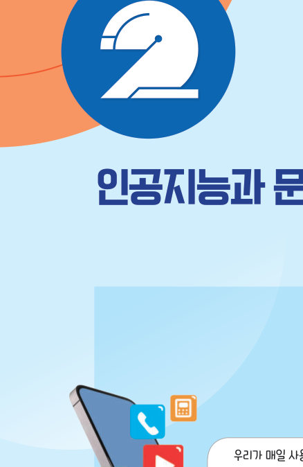

살아있는 교과서 · Ⅳ. 인공지능 · 2. 인공지능과 문제 해결 178~185쪽
이미지 데이터를 이용한
이미지 데이터를 이용한
운동 도우미
팔 모양 사진을 학습한 이미지 분류 모델이 왼팔·오른팔을 구분하면, 엔트리봇이 결승선을 향해 달린다. 교과서 팔 사진으로 모델을 학습시키고 평가한 뒤 운동 도우미를 실행해 보고, 깨끗한 교실을 알려 주는 모델도 만들어 보자.
🎯 학습 목표 — 이미지 데이터를 이용한 인공지능 시스템을 생성하고, 이미지 분류 모델을 활용하여 운동 도우미 프로그램을 구현할 수 있다.
2. 인공지능과 문제 해결 · 생각 나누기인공지능이 바꾸는 우리의 생활 178쪽

1학교생활의 문제 가운데 인공지능이 해결해 줄 수 있는 것을 이야기해 보자.
1. 이미지 데이터의 분류이미지 분류 모델 179쪽
이미지 분류 모델은 이미지의 특성을 분석하여 특정 이미지가 어떤 범주(category)나 클래스(class)에 해당하는지 예측하는 모델이다. 예를 들어, 이미지 분류 모델이 강아지와 고양이를 구별하기 위해서는 먼저 두 동물의 이미지를 학습해야 한다. 학습 과정에서 동물의 색상, 형태 등 이미지의 특징을 분석하여 대상을 분류한다.
이 페이지의 모델은 무엇을 볼까? 사진을 아주 작게(24×16) 줄인 흑백 모양과 색 분포를 숫자로 바꾼 뒤, 새 사진과 가장 비슷한 훈련 사진을 찾아 그 레이블로 분류해요(최근접 이웃 방법).
1[그림 Ⅳ-10] 강아지와 고양이 이미지 분류 모델의 학습 과정을 순서대로 골라 보자.
| 강아지·고양이 사진을 모은다. | |
| 사진마다 ‘강아지’, ‘고양이’ 레이블을 붙인다. | |
| 색상, 형태 등 특징을 분석하여 모델을 학습시키고 평가한다. | |
| 새로운 사진을 넣어 강아지인지 고양이인지 알려 주는 데 쓴다. |
2~4. 문제 파악하기 · 데이터 수집 · 모델 생성 및 평가팔 이미지 데이터를 이용한 운동 도우미 180~183쪽
문제 정의 팔 이미지를 학습시켜 팔을 번갈아 보여 주면 엔트리봇이 운동을 도와 주는 프로그램 만들기. 인공지능 모델이 팔 운동 시작, 왼쪽, 오른쪽을 분류할 수 있도록 각각의 이미지를 수집하고 정확하지 않은 이미지는 삭제한다. 수집한 데이터를 레이블링한 후 훈련 데이터와 테스트 데이터로 분류한다.
활동 도우미 엔트리에서는 모델 학습을 위해 클래스마다 최소 다섯 개 이상의 이미지를 제시해야 한다. 각 클래스별로 이미지의 개수가 비슷해야 한다. 한 클래스만 이미지 개수가 많다면 인공지능 모델은 데이터 수가 많은 클래스로 결과를 산출할 가능성이 높기 때문이다. 테스트 데이터는 훈련 데이터로 사용하지 않은 이미지를 사용해야 한다.
1운동 도우미를 만드는 과정을 연결해 보자.
| 데이터 수집 | |
| 모델 생성 및 평가 | |
| 알고리즘 설계 | |
| 프로그래밍 |
2이 모델의 클래스는 개이고, 교과서 데이터는 클래스마다 훈련 데이터 장씩이다. 한 클래스의 훈련 데이터만 많으면 모델은 .
5. 모델 활용 · 해 보기 1엔트리봇과 함께하는 팔 운동 183~184쪽
➊ 팔 모양이 ‘팔 운동 시작’ 클래스에 해당하면 프로그램을 시작한다. ➋ 왼팔과 오른팔을 번갈아 들어 캐릭터를 결승선까지 이동시킨다. ‘구분’ 변수를 이용하여 왼쪽과 오른쪽 팔 이미지가 번갈아 등장할 때만 캐릭터가 이동하도록 설정한다. (구분 0: 왼팔 차례, 구분 1: 오른팔 차례)
비디오 대신 사진 보여 주기:
먼저 위에서 모델을 학습시킨 뒤, ‘👍 팔 운동 시작’ 사진을 보여 주세요.
1‘구분’ 변숫값이 0일 때 분류 결과가 ‘왼쪽’이면 10만큼 움직이고 ‘구분’을 (으)로 정한다. 왼쪽 사진을 두 번 연속 보여 주면 두 번째에는 .
2엔트리봇을 결승선까지 달리게 해 보자(사진 단추 또는 카메라).
아직 도착하지 않았어요.
3해 보기 1 ‘팔을 올리지 않아도 왼팔 또는 오른팔을 올린 것으로 판단하여 프로그램이 실행된다’는 오류가 생겼다. 원인과 해결 방법을 써 보자.
해 보기 2 · 개별청소 결과를 확인하는 프로그램 만들기 185쪽
깨끗한 교실을 유지하기 위하여 필요한 데이터를 수집한 후, 교실 상태를 알려 주는 인공지능 프로그램을 만들어 보자.
테스트 사진을 누르면 교실 상태를 알려 줘요.
1모델을 만들기 위해 필요한 데이터를 어떻게 수집하고 레이블링했는지, 그리고 모델의 성능과 개선 사항을 써 보자.
2인공지능 윤리 점검 나와 친구의 프로그램을 확인해 보자.
| 인공지능을 활용하려는 목적이 올바른가? | |
| 자료를 수집할 때 개인 정보나 저작권을 보호하도록 하였는가? | |
| 인공지능 모델을 학습시킬 때 편향된 결과를 산출할 가능성을 최소화하였는가? | |
| 인공지능 모델을 활용하는 프로그램이 타인에게 피해를 줄 가능성은 없는가? |
스스로 정리하기이미지 데이터를 이용한 인공지능 179~185쪽
1이미지 분류 모델
(은)는 이미지의 특성을 분석하여 특정 이미지가 어떤 범주나 클래스에 해당하는지 예측하는 모델이다.
✔옳으면 O, 옳지 않으면 X
| 테스트 데이터는 훈련 데이터로 사용하지 않은 이미지를 사용해야 한다. | |
| 클래스별 이미지 개수는 크게 달라도 결과에 영향을 주지 않는다. |
| 평가 기준 | 스스로 평가 |
|---|---|
| 이미지 데이터를 이용한 인공지능 시스템을 생성할 수 있는가? | |
| 이미지 분류 모델을 활용하여 팔을 이용한 운동 도우미 프로그램을 구현할 수 있는가? |
제출학생 정보 · 제출하기
모든 활동을 마친 뒤 제출하면 전체가 한 번에 채점되고 피드백이 나타나요. 학년을 꼭 적어 주세요 — 답안은 선생님 스프레드시트(내 학년 시트의 정보 탭)에 기록돼요.